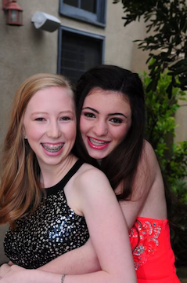
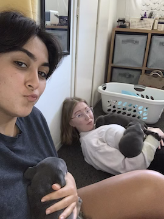
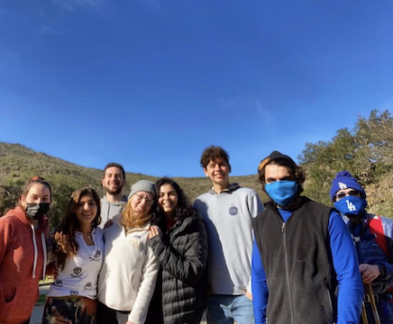

Friends :)
Ava Zarifpour
Hi I’m Ava, Sammi’s best friend. When I first met Sammi in 2020, I knew that I wanted to be her future roommate. Like actually. When I found out that she was moving into the Bayit, I asked (begged) the RA’s to room us together because of how well we hit it off and how normal she seemed (boy, was I proven wrong! Jk…..).
In that short first meeting, I could tell that Sammi was just such a well-rounded, caring, intelligent person. Almost 3 years later and she is someone I call “the sister I never had” or “the second Zarifpour daughter” (it alternates).
I appreciate Sammi for always being herself, as cheesy as that sounds. She has taught me how to unapologetically be myself and to set health boundaries. When in doubt, I often think, “what would Sammi do?” She gives the best advice and has so much empathy and gentleness when weighing options which is why I feel like I can always depend on her.
When I’ve been at my worst Sammi was by my side, holding the popcorn bowl. When I was at my best, Sammi was cheering me on and routing for me. She’s been there for me in moments that I would only expect family to be there for and the best part was that she has never judged me—not once.
Sammi is a gem. To watch her grow into who she is over the years has been magical and I am so proud of who she is, how hard she has worked, and the choices she’s made (Jonah being one of them. Nice.).
Thank you, Sammi for being my best friend. I love you so much❤️


Amber Bartlett
Samamay,
From the very moment I met you, I just knew deep in my bones that we would be lifelong friends.
I feel so fortunate to have a friend like you that has seen me at my most awkward, most vulnerable,
most full of myself… and everything in between. Just remember, the true blackmailing comes at your wedding.
You are such a loving, goofy soul. I just know that you will approach whatever professional and personal pursuits
come your way with openness, passion, and humor. Today we celebrate the very special person you are!! Cheers to 23 years of
Sammi’s existence and 13 years of friendship. God knows I’d still be in the Yosemite woods without you. I love you! Happy birthday 🎈



Mabel Dorfan Sanders
Samantha,
give churu pls. Happy birthday Mom, I love you because you are nice. Alright brb gonna scratch the couch again.
Meow, Mabel (P.S. these are 3 separate days below lmao)
Reb Meshkani
To my dear friend Sammi,
Thank you for being YOU and filling our lives with love, laughter, and animals ❤️ I'm so lucky to have you as my friend!
On your birthday this year, I hope you know how loved and special you are 💫
Happy Birthday sammi-wammi!! I love uuuuu!
-Reb 💜

Rocky Klein
There is a teaching that on your birthday, hashem decided that the world cannot continue without you.
I wish you an amazing year of personal growth and strengthening of connections.
I have so many fond memories of hanging out with you at the bayit. Taking care of Fiona, going on walks in Beverly Hills, getting boba at that place that I had a punch card, along with many others.
Thank you for being a great person to talk to whenever I was down, helping with my essays, and also thank you for encouraging me to read more often.
Had we been closer outside of covid, I would have loved to go on larger adventures, but I think that we played the cards that we have been given quite nicely.
Be grateful for the unknown blessings already on your way!
